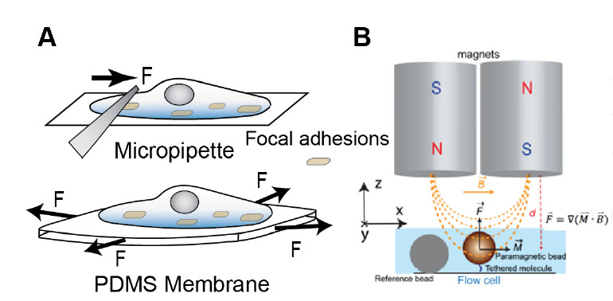

Yan Jie Group @ NUS
Single Molecule & Single Cell Biophysics
Biophysics is an inter-disciplinary research area where physicists, biologists, chemists, and programmers work together to understand challenging and interesting phenomena such as DNA mechanics and its phase transitions, chromosome compaction, micromechanics of biopolymers, and mechanosensing of cells. Our group is interested in many aspects of the biophysical research field, and we welcome disucssions and collaborations with anyone who share this passion in mechnobiology.
The principal investigator
Yan Jie is currently a professor at Department of Physics at National University of Singapore, where he first joined as a faculty member in 2005. He is also a principal investigator at NUS Mechanobiology Institute and NUS Centre for BioImaging Sciences. While being trained in theoretical physics, he has since built a strong interest in studying molecular and cell biology using a combination of novel single-molecule biophysical methods and theoretical modeling. In 2015, Yan Jie was awarded American Physical Society (APS) Fellowship. And in 2016, he received the Singapore National Research Foundation (NRF) Investigatorship as well as the Human Frontier Science Program’s Research Grants.
Education:
Our Location
Our labs and office are in the National University of Singapore (NUS), of the citystate called Singapore. NUS, being a comprehensive research university, houses several research institutes that bring global talents with expertise in all kinds of area. Our group members are affliated with Department of Physics, Centre for BioImaging Sciences, and Mechanobiology Institute. Here is an aerial view of our location:
Department of Physics, NUS, 2 Science Drive 3, Singapore 117542